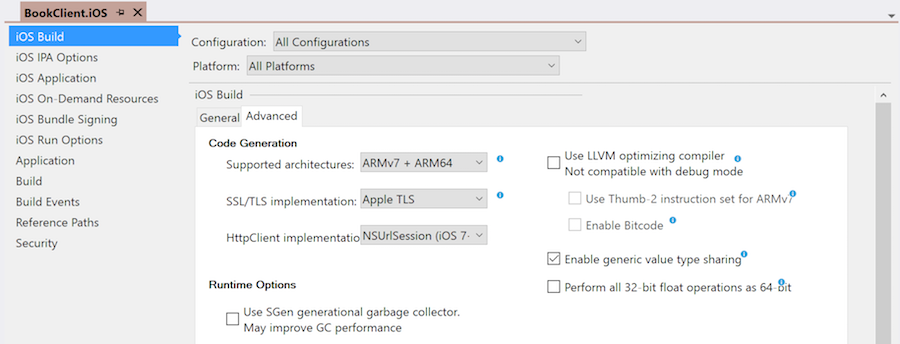
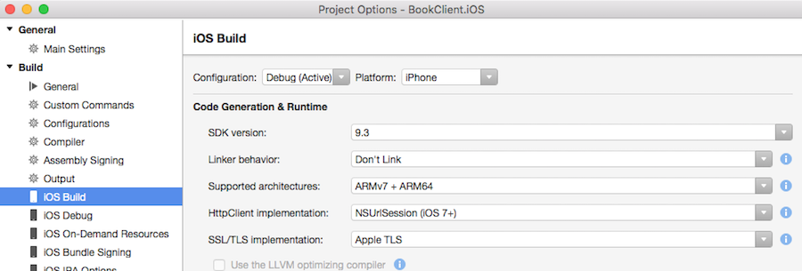

Duration
10 minutes
Goals
In this final group exercise, we will add support to our Book client to use native networking handlers. It should behave and run exactly as before, but be optimized to each platform.
Exercise Overview
We will perform the following steps together:
- Turn on the platform networking stack for iOS and Android (it's not necessary for Windows since that's using .NET directly and it already leverages the Windows networking stack).
- Add the proper exclusions for App Transport Security to allow the app to work with iOS9.
Steps
Use the native platform network stack
We will modify the iOS and Android projects to use the proper HTTP message handler. You can either continue from the prior exercise, or use the completed project from the prior exercise if you'd like to start fresh.
Recall from the lecture that there are two ways we could do this.
- We could pass in the platform-specific message handler into the
HttpClientconstructor for iOS and Android. Since we are using a PCL to create the client, we'd have to pass (inject) in the proper implementation from each of our platform head projects. - We can use the IDE switch in iOS and Android to set the default message handler - by default it uses the Mono networking stack, but we can change the default handler supplied to the default
HttpClientconstructor to alter this behavior.
Feel free to experiment with both approaches if you have time. The instructions for (#2) are given below.
- Let's start with the iOS project. Open the project properties for BookClient.iOS. Go to the iOS Build properties and locate the HttpClient implementation dropdown. On Visual Studio, it's located in the Advanced section.
- Change the HttpClient implementation to be NSUrlSession, and change the TLS implementation to be Apple's TLS as shown below:  
- Next, let's setup the Android project. Open the Project Options and locate the "HttpClient Implementation" setting in the Android Options - it is in the General settings on macOS and the Advanced settings on Windows. Select "AndroidClientHandler" as the implementation.
- Run both applications. The Android project should run just as it did before, but the iOS project might now throw an exception because we are using an untrusted/insecure endpoint. This will only happen if you happen to be using iOS9 or later. We could fix this by switching to an https endpoint, or by adding an ATS exclusion.

(Optional) Add ATS policy exceptions for our endpoint for iOS9
In this final step, we will add keys into the info.plist for our iOS host application to allow the app to communicate with the book server even though it's not using TLS.
- Using an XML editor, open the info.plist file in the BookClient.iOS project. You can also use the GUI editor, but because this key is new, it may be difficult to add it in as a custom key until support is in the GUI.
-
At the end of the XML file, just before the final
</dict>, add a<key>forNSAppTransportSecuritywith a child<dict>section. Fill it with the following code to setup the exclusion forxam150.azurewebsites.net.
...
<key>UILaunchStoryboardName</key>
<string>LaunchScreen</string>
<key>CFBundleShortVersionString</key>
<string>1.0</string>
<key>NSAppTransportSecurity</key>
<dict>
<key>NSExceptionDomains</key>
<dict>
<key>xam150.azurewebsites.net</key>
<dict>
<key>NSExceptionMinimumTLSVersion</key>
<string>TLSv1.0</string>
<key>NSExceptionRequiresForwardSecrecy</key>
<false/>
<key>NSExceptionAllowsInsecureHTTPLoads</key>
<true/>
<key>NSIncludesSubdomains</key>
<true/>
</dict>
</dict>
</dict>
</dict>
</plist>
- Run the application a final time and verify that it is now capable of pulling data for the iOS app with the native handler enabled.
Summary
Congratulations! We are now using an optimized, platform-specific web client implementation to access our REST based services. Make sure to ask any questions you have and take advantage of the live instructor!